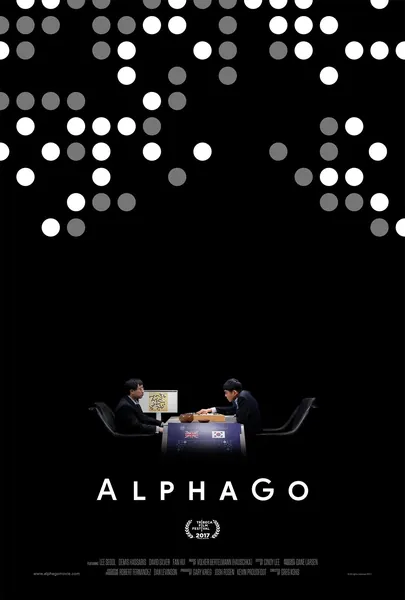

 АльфаГо AlphaGo 2017 Документальный Кинопоиск: 8.1 ★ IMDb: 7.8 ★ Хроника матча AlphaGo против Ли Седоля — сильнейшего игрока в го своего десятилетия. Никто не ожидал победы машины: го считалось игрой, требующей интуиции и неподвластной простому перебору вариантов. Фильм запечатлел не только сами партии, но и лица людей: неверие, отчаяние и — в четвертой игре — тот самый «37-й ход», после которого стало ясно: машина играет не как человек, а как нечто совершенно иное. Документальная лента о моменте, когда теория стала историей. Описание на английском The chronicle of AlphaGo's match against Lee Sedol, the best Go player of his decade. No one expected the machine to win: Go was considered an 'intuitive' game beyond bruteforce. The film captures not just the games but the faces: disbelief, despair, and — in game four — 'move 37', after which people understood the machine was not playing like a human but like something else entirely. A documentary about the moment theory turned into history.